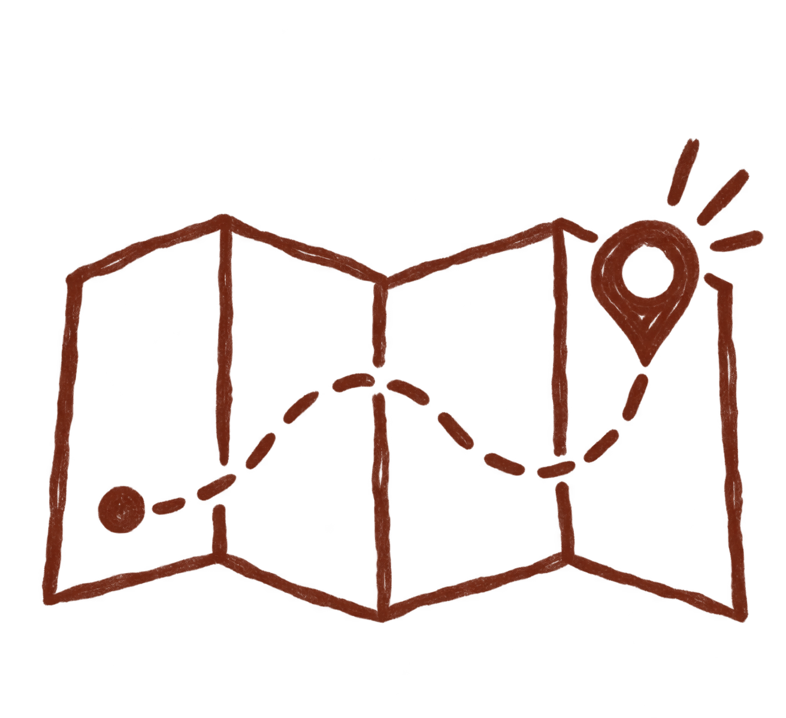
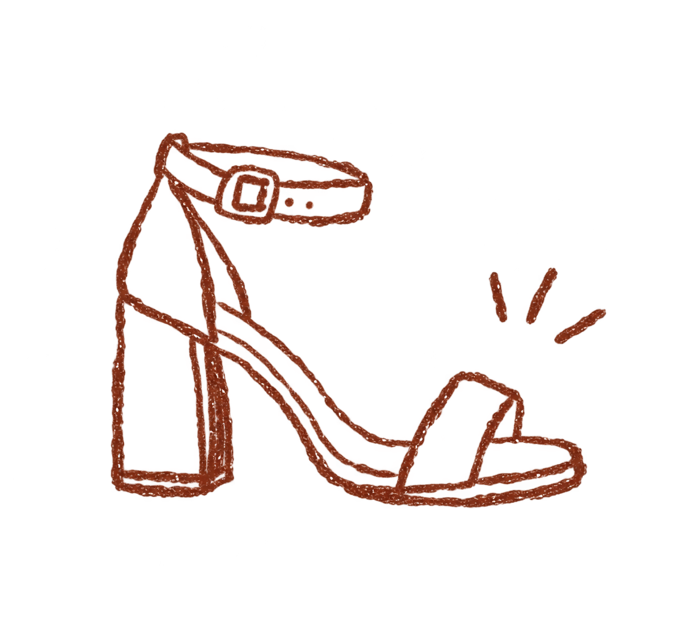

algumas dicas pra curtir o nosso dia com a gente
reunimos aqui tudo que vocês precisam saber antes de chegar na nossa casa de vidro 🤎

nosso casamento será no mirante juruá, em mairiporã.
a cerimônia começa às 15h, então recomendamos que vocês cheguem com um pouquinho de antecedência para entrarem tranquilos e aproveitarem tudo desde o começo.
mirante juruá
r. benedito fontana, 305
parque suíço, mairiporã/sp

escolham uma roupa que faça vocês se sentirem lindos, confortáveis e prontos para comemorar muito com a gente.
nosso casamento acontece em um espaço cercado pela natureza e com áreas de gramado, então vale levar isso em consideração na escolha do sapato.
saltos mais grossos, plataformas ou modelos mais confortáveis podem ser grandes aliados para aproveitar cada cantinho sem preocupação.
estaremos juntos durante a tarde e seguiremos comemorando até a noite.
como o mirante fica em uma região mais alta e cercada pela natureza, a temperatura pode ficar mais fresquinha quando o sol se despedir.
se você costuma sentir frio, vale levar uma terceira peça para ficar confortável até o último minuto da festa.
crianças são muito bem-vindas por aqui! 🤎
teremos um espaço kids preparado especialmente para elas aproveitarem o nosso dia também.
crianças a partir de 5 anos podem permanecer no espaço kids sem um responsável.
para os pequenos menores de 5 anos, pedimos que um responsável permaneça junto durante o período de uso do espaço.

queremos todo mundo curtindo muito, mas também voltando para casa com segurança.
se você pretende beber, nossa dica é já se organizar com motorista, carona ou transporte por aplicativo.
assim dá pra aproveitar a festa inteira sem nenhuma preocupação. 🤎

agora é só chegar,
comemorar e viver esse dia com a gente.
CASO TENHAM QUALQUER DÚVIDA OU PRECISEM DE AJUDA,
ENTREM EM CONTATO COM A ASSESSORIA DO CASAMENTO
Tamara Murtha